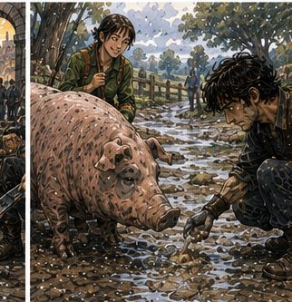
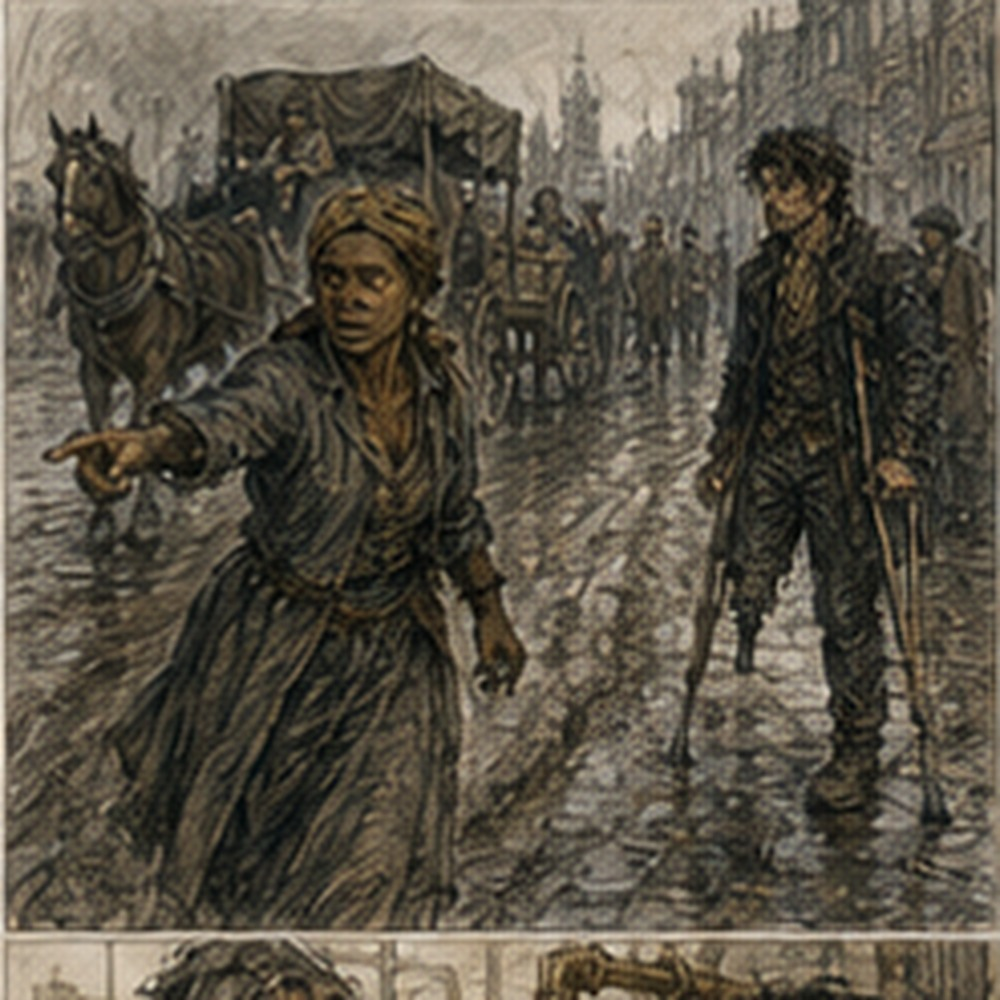

First light was a lie. There was light. Nothing about it felt first. The west gate was already open enough for carts, bakers were already selling yesterday's bread as today's breakfast, and someone had been arguing with a mule long enough to lose. I arrived with two boiled eggs in my coat pocket. Prepared. Professional. One cracked when I sat on it.
Less professional. Alden was beside the first cart, checking a wheel. Not pretending to check. Actually checking. He had one hand on the rim and was watching the hub while the driver moved the cart half a turn.
Pessa stood on the other side with her short spear laid across her shoulders. Cropped brown hair. Green coat. One boot unlaced. She was eating an apple. Dorn sat on the second cart tongue with a whetstone, working the edge of a broad knife. His nose was still crooked. His padded coat had three different repairs. Nobody waited for me. Good. Alden looked up.
“You're late.”
I looked at the gate clock.
“I am early.”
“You're later than me.”
“That is not late.”
Pessa said, “He does this?”
“Yes.”
Dorn said, “Morning.” Better.
“Morning.”
The two carts were smaller than I expected. First carried tool crates. Shovels. Pruning hooks. Saw blades wrapped in oiled cloth. Two bundles of wooden handles. Second carried six lamp-oil barrels packed with straw and tied under canvas. Not full barrels. Same half size as yesterday. Of course. The world had discovered a container and kept using it.
Drivers:
Merrit on tools. Sova on oil. Merrit was thin, maybe fifty, with one cloudy eye and a habit of touching the brake lever whenever anyone said road. Sova was younger, broad-faced, and had brought a dog. The dog was not part of the contract. I asked.
“Dog?”
“Pip.”
“Why?”
Sova looked at the dog.
“Because he's mine.”
Fair. Pip looked at me. No approval. Alden handed me the Guild slip.
WEST ORCHARD DELIVERY
TWO CARTS
TOOLS / LAMP OIL
FOUR BRONZE
LOW ROAD RISK
SAME DAY EXPECTED
SIX COPPER EACH
DELIVERY SIGNATURE REQUIRED
“Who leads?” I asked.
Pessa said, “Road.” I looked at her. She pointed west.
“The road leads,” Pessa said.
Good answer. Alden said, “Merrit owns the carts until delivery. We keep them moving and deal with trouble.”
“Who handles oil?”
“Sova.”
“Who handles tools?”
“Merrit.”
“Who handles us?”
Pessa bit the apple.
“No one if we're lucky.”
Excellent. We left. Carrow thinned slowly. Stone to packed road. Packed road to patched road. Patched road to the kind of road that existed because enough wheels had agreed to keep going the same direction. The rain had changed it. Not ruined. Changed. Low places held water. Wheel ruts softened. The crown remained firm in most stretches. Ditches ran brown. Fields shone.
The morning smelled like wet dirt and horse. I liked it. That was suspicious. Pessa walked ahead of the first cart for the first mile. Not scouting dramatically. Watching road surface. She moved the cart twice before it reached a soft rut. Just pointed. Merrit adjusted. No discussion. Dorn stayed behind the oil cart. He watched straps. Every few minutes he touched one.
Not because they were loose. Because they could become loose. Alden moved between. I walked beside Sova. Pip walked wherever Pip wanted.
“What do you do besides this?” I asked.
Sova looked at me.
“Drive.”
“Only?”
“Mostly.”
Good. Pip found something dead. Sova called once. Pip ignored her. Called twice. Pip returned. Competent dog. Maybe.
“Your turn,” Alden said.
“What?”
“Front.”
Pessa had dropped back. I moved ahead of the tool cart. There was no enemy. No watcher. No magical pressure. Just road. Good. I looked at the road. First mistake was looking too far. Future Greg road sense wanted terrain. Ambush points. Elevation. Cover. Sight lines. Places a wagon could be trapped. All useful. None immediate. Merrit cared about the next fifty feet.
I shortened. Water. Firm edge. Rut. Loose stone. A branch dragged from the ditch. I moved it. Pessa said nothing. At a shallow downhill, the right wheel wanted the old rut. I pointed left. Merrit looked.
“Too soft.”
I looked again. He was right. Surface looked better. Underneath darker. Water sitting below. He took the rut. Wheel sank two inches. Held. Climbed out. Fine. I updated. Road was not map. Driver knew cart. Useful. At the bottom we crossed a narrow wooden bridge. One cart at a time. Not because sign said so. Because Merrit said so. Tool cart crossed.
Oil cart waited. Pessa leaned on the rail.
“What?”
I asked.
“Nothing.”
“You're watching the downstream brace.”
“Yes.”
“Why?”
“Because it moved.”
I looked. It had. Slightly. Water pushed debris against the bridge supports. Not dangerous now. Maybe later.
“Report?”
“On return.”
“To?”
“Gate road clerk.”
She said it like obvious. It was. She had probably done this route before.
“How many times?”
“Four.”
Alden had not mentioned. Good.
“Orchard?”
“Twice.”
“Then why am I front?”
“Because Alden said you're good on roads.”
There. Expectation. I looked at the road. No pressure. Just do it. We kept moving. Around midmorning, the first actual problem happened. Pip disappeared. Not into mystery. Into an orchard ditch. Sova swore. The oil cart stopped.
Pessa kept the tool cart moving another thirty yards to a firm shoulder before stopping it. Good. Sova climbed down.
“Pip!”
Barking. Below road level. Angry barking. Dorn went with her. Alden looked at me. I looked at him.
“Not our dog.”
“No.”
We waited. More barking. Then Sova shouted, “Dorn.” Different tone. We went. Pip had found a pig. Small pig. Large enough. The pig stood in the ditch with mud halfway up its legs. Pip stood on the bank. Neither knew what victory meant. Dorn had the dog by the collar. Sova was trying to get a rope around it. The pig. Not the dog.
“Whose?” Alden asked.
Sova said, “Not mine.” Excellent. Pessa arrived last. She looked down.
“Fence.”
Across the ditch, a section of orchard fence had fallen inward. Pig had escaped. Probably. No monster. No bandits. Pig. Pessa said, “Get dog up.” Dorn hauled Pip. Pip objected. Sova climbed after him. Pig remained. I looked at the broken fence. Then at road. Then pig.
“We leave it?” Alden asked. Not asking me specifically.
Pessa said, “If it reaches road, cart problem.”
Dorn said, “If we put it back, farmer problem.”
Sova said, “If Pip sees it again, my problem.” Good. Pig looked at us. I had known kings with less confidence.
There was a farmhouse maybe two hundred yards through the orchard. Smoke. Someone home. Alden said, “I'll tell them.” He crossed the ditch. Pessa said, “I'll keep carts.” Dorn kept dog. Sova returned to oil. I had no assigned role. Excellent. Pig started climbing toward road. There. I stepped sideways. It stopped. I stepped closer. It changed direction. I knew nothing about pigs.
Future Greg had fought boar-shaped things. Not same. I spread my arms. Pig turned. Good.
“Greg,” Pessa said.
“Yes?”
“Don't fight the pig.”
“I am not fighting.”
“You look like you're planning.”
“I am redirecting.”
“Without magic.”
“Yes.”
“Good.”
The pig tried left. I moved left. It tried right. I moved right. This was working. I became overconfident. Pig ran straight at me. I jumped aside. Young body did this very well. Mud did not. My left boot slid. I landed on one knee. Pig passed. Pessa laughed hard enough to bend. Dorn shouted from the road, “Road expert!” Hostile. I got up.
Ribs fine. Knee muddy. Pride injured. Pig was now closer to the road. Worse.
“Fine.”
Coin-sized Barrier. Low. Not in front. Beside its left forefoot as it turned. One moment. The pig felt wrong ground and shifted right. Toward the ditch bottom. Barrier gone. No pressure. Pessa stopped laughing.
“Useful.”
“Yes.”
“Still lost to pig.”
“Yes.”
Alden returned with a farmer and a girl carrying a bucket. The girl saw the pig.
“Turnip!”
Of course its name was Turnip. Turnip saw the girl. Everything changed. Pig walked directly to her. No rope. No Barrier. No tactical genius. The girl scratched its head.
“Bad.”
Turnip looked pleased. The farmer was older, missing two teeth, carrying a hammer.
“Fence washed.”
Pessa pointed at the road.
“Keep him off until fixed.”
“Her.”
“Her.”
The farmer nodded. Alden said, “Bridge downstream brace is moving too.” Farmer frowned.
“Again?”
Again. Local knowledge.
“Road clerk on return,” Pessa said.
“Tell Oren, not Mal.”
“Why?”
“Mal writes it down.”
I laughed. Everyone looked.
“Nothing.”
We left. Turnip followed the girl.

Pip stared backward for half a mile. The next problem was a wheel. Not broken. Hot. Merrit stopped without anyone telling him. He touched the hub. Swore. Tool cart. Right front.
“Grease washed?”
Alden asked. Merrit said, “Maybe.” He pulled the cap. Checked. Pessa found a flat place. Dorn brought a jack. Not Guild hook. Cart jack. I watched. No need. Merrit knew. Dorn knew. Alden held the wheel when asked.
Pessa moved loose tool crates to rebalance while the wheel lifted. I stood. This became uncomfortable.
“What do you need?”
Merrit said, “Nothing.” Fine. I waited. Pip sat on my boot. Apparently I had a role. The hub was not damaged. Grease thin. Merrit had more. He cleaned. Packed. Reset. Twenty minutes.
“What caused it?” I asked after.
“Water maybe.”
“Maybe?”
“Maybe I packed it bad.”
Good. No certainty theater.
“Will it hold?”
“Yes.”
“How do you know?”
“I don't.”
He touched the hub.
“Check again in a mile.”
Professional uncertainty. Excellent. We did. Warm. Not hot. Again another mile. Warm. Fine. Lunch happened beside a stone wall. Bread. Cheese. My second egg had survived. The first had become pocket paste. I threw shell and ruined egg into grass. Pip ate it. Problem solved. Pessa had smoked fish. Dorn had an entire onion. He ate it like an apple. I stared.
“What?”
“Nothing.”
“You're judging.”
“Yes.”
“Good.”
Alden traded half his cheese for some fish. Existing relationship? Maybe. Pessa accepted without negotiation. Likely. I did not ask. Growth. Pessa asked me instead.
“What kind of magic?” Pessa asked.
“Barrier,” I said.
“Alden said,” Pessa replied.
“What did Alden say?”
“That you make tiny ones in stupid places.”
Accurate.

“Did he say good stupid?”
“No.”
Alden said, “I said useful.”
“You said annoying.”
“Also.”
Dorn pointed onion at me.
“Can you stop arrows?”
“Yes.”
Present body?
“Some.”
Better.
“Can you stop a cart?”
“No.”
“Horse?”
“Not like you're asking.”
“Pig?”
Pessa laughed again.
“I redirected the pig.”
“You fell.”
“Separate event.”
Alden was smiling. Dorn said, “Why tiny?” There. Actual question.
“Because most things don't need all of them stopped.”
He waited. I pointed at his onion.
“If I wanted you to drop that, I wouldn't need to stop your whole arm.”
He moved the onion away from me.
“Don't.”
“I wasn't.”
“Face said maybe.”
Everyone. Pessa said, “I like him.” Alden said, “For now.” We finished lunch. The orchard destination was not an orchard. It was several. West Orchard Cooperative. Three farms sharing a storage barn, oil shed, repair yard, and seasonal labor. The tool crates went to the barn. Lamp oil to a stone-sided shed thirty yards away. Different recipients. Of course. Merrit knew. Sova knew.
We did not. The cooperative steward was a woman named Cenn. She counted tools before signing. Every crate. Opened two. Checked saw bundles. One handle bundle had twelve instead of fourteen. Merrit swore. Manifest said fourteen. Cenn said, “I ordered fourteen.” Alden looked at me. No. Not mine. Merrit untied bundle. Counted. Twelve. Second bundle. Fourteen. Tool crates correct.
“Missing at Carrow?” Pessa asked.
Merrit said, “Could be.”
“Loaded count?”
“Bundle count from yard.”
“Sealed?”
“No.”
Cenn said, “I need fourteen.” Merrit said, “I can note shortage.”
“I need handles.”
Different objective. Not accusation. Work. Cenn pointed toward the repair yard.
“We have ash blanks.”
Merrit looked.
“Size?”
“Long.”
“Can cut.”
There. Solved locally. Not perfect. Merrit wrote shortage. Cenn accepted delivery with shortage noted and arranged for two blanks to be cut. No investigation. No thief. No Greg. Good. Oil delivery had its own problem. The stone shed was full. Not entirely. Full enough. Sova opened the door. Three rows of barrels. Some empty. Some full. Labels chalked. Cenn swore.
“North orchard hasn't collected.”
Sova said, “I can't leave these outside.”
“Neither can I.”
Lamp oil. Sun. Later heat. Bad. Pessa said, “Empty barrels?”
“Returns.”
“Move them.”
Cenn shook her head.
“Not all empty.”
She knew. Good. Dorn rolled one slightly. Cenn snapped, “Don't.” He stopped.
“Marked empty.”
“Mark is old.”
There. Information problem. Not strength. Cenn had one worker fetch a dip rod. They checked. Two empty. One quarter. Three nearly empty. Space could be made. But moving full barrels to identify empty ones risked mixing stock and blocking access. I looked at layout. Door narrow. Rows deep. Six new barrels outside. Sun climbing. Actual constraint. Not storage capacity. Access.
“What order do you use them?”
I asked. Cenn pointed.
“Front left first. Then rear left.”
“Why rear blocked?”
“Returns came in yesterday.”
“Can returns go repair yard?”
“Empty ones.”
“Quarter?”
“No.”
“What needs to remain accessible today?”
“Front left.”
“Then don't make room for six.”
She looked at me.
“Make room for two. Put four on cart shade while you clear returns.”
Sova said, “Cart has canvas.” Cenn considered. Not revelation. Just sequence. She nodded.
“Two in.”
Her decision. Dorn and Alden rolled empties. Pessa and Cenn's worker shifted the quarter barrel. Sova controlled new barrels. I held door. Literal. The first new barrel came over the threshold. Stone lip. Small. Wheel dolly caught. Dorn lifted. Alden pushed. No magic. Second. Fine. Then four remained under cart canvas.
Cenn sent another worker to clear the repair-yard corner for empties. System moving. I kept holding the door. Very important. Eventually all six fit. Not elegantly. Cenn signed oil receipt. Sova checked seal marks. Done. Six copper earned? Not yet. Return. Same road. The weather warmed. Hub stayed warm, not hot. Bridge still standing. Turnip absent. Good. At the bridge, Pessa stopped.
Debris had increased. Not enough to block water. Enough to push harder on downstream brace. She looked at it. Alden looked. Merrit said, “We cross now or detour four miles.” Pessa said, “One at a time.” Same as morning.
“Then report,” I said.
She nodded. Tool cart crossed. Oil cart now empty except packing and returns. Lighter. Crossed. No drama. At west gate, Pessa went directly to road clerk. Not me. She asked for Oren. The clerk said Oren was eating. Pessa said, “Then get him after.” She reported bridge brace movement and increased debris. Clerk wrote it down. Maybe Oren would care. Maybe Mal would have too.
Not ours. Guild clerk checked signatures. Six copper each. Actual coins. Pessa counted hers once. Dorn twice. Alden did not count until outside. I counted because I had recently learned rocks could destroy an economy. Six. Good.
“What now?” Alden asked.
Pessa said, “Bath.” Dorn said, “Food.” Alden looked at me. I considered. Bale. Kett. Varo. Edrin. Arlo. No.
“Food.”
Dorn nodded.
“Good.”
Pessa left alone. No invitation. Dorn went toward the south market. Alden and I followed for half a block. Then Dorn turned.
“You two coming?”
Apparently invitation. We went. The place sold fried potatoes and sausages through a window. Dorn bought two sausages. Alden bought potatoes. I bought both. Two copper. Four left. Profit. We ate sitting on a low wall.
Dorn told a story about Pessa dropping a spear into a well on a previous job. Alden already knew it. I did not. Good. Then Alden told Dorn about my fight with Turnip. This was betrayal.
“I did not fight the pig.”
“You lost.”
“I redirected.”
“You fell.”
“Separate event.”
Dorn nearly choked on sausage. I ate. The day had gone well. No attack. No future knowledge. No important discovery. A hot hub. A pig. Missing handles. Crowded oil shed. Bridge brace. Six copper. Ordinary Bronze work. Alden had asked because I was good on roads. Was I? Maybe. Pessa was better at road surface. Merrit was better at carts. Dorn was better at moving barrels.
Cenn was better at her cooperative. Sova was better at Pip. Probably. I had been useful anyway. Not because I knew more. Because sometimes there was a gap. A moment between people. A sequence that needed choosing. A hoof, wheel, barrel, pig, door. Tiny spaces. I liked tiny spaces. Dangerous thought. I did not build a philosophy. I ate the second sausage.
Dorn said, “You working tomorrow?”
“I don't know.”
“Good.”
“What?”
“Means no.”
“That is not how maybe works.”
Alden said, “It is with him.” Hostile. We finished. Dorn left first. He had somewhere to be and did not say where. Alden watched him go.
“You like him?”
“Yes.”
“Why?”
“He eats onions wrong.”
Alden accepted this. We walked back toward the center. At one corner he turned north. I kept east. No discussion. No need. I had four copper, sore legs, clean channels, and mud dried on one knee from losing a fight I had not fought. Tomorrow could wait.